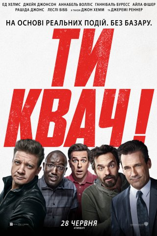
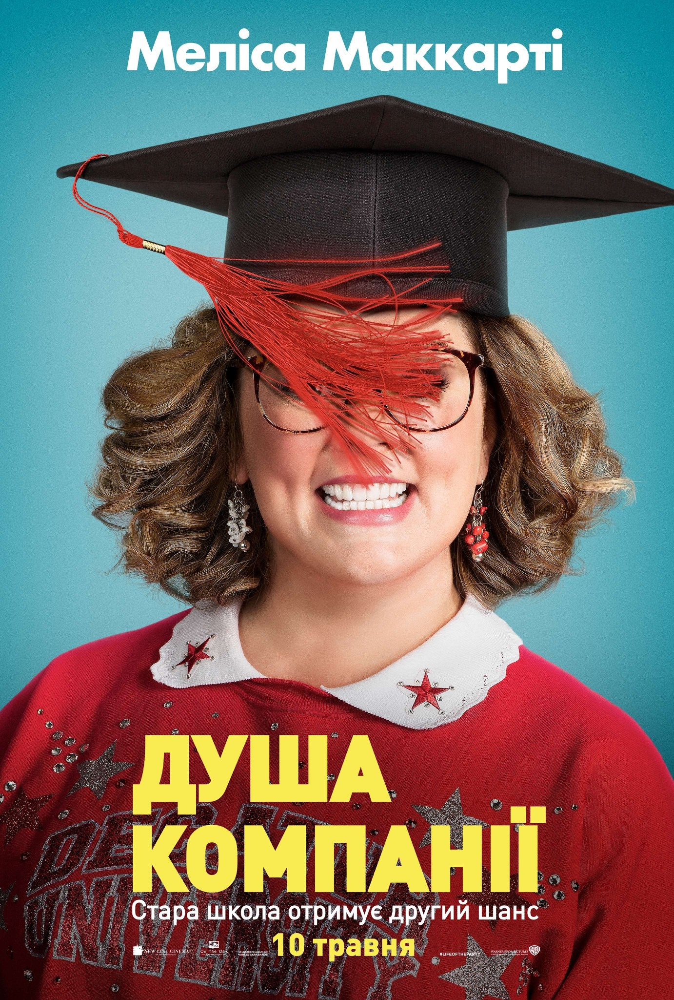
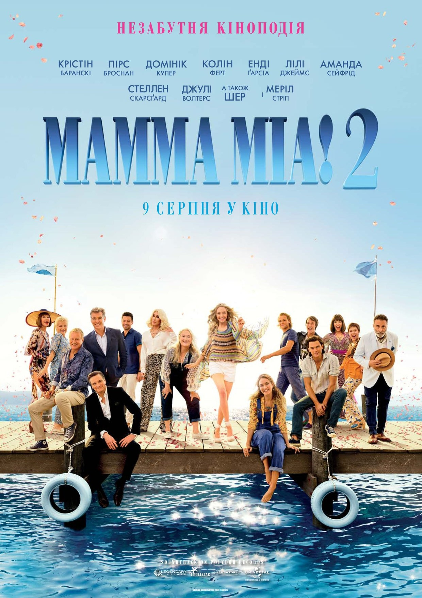

Ти квач!

- Назва: Ти квач! / Tag
- Режисер: Джефф Томсіч
- Актори: Джеремі Реннер, Ед Гелмс, Джейк Джонсон, Аннабелль Волліс,nДжон Хемм, Ганнібал Буресс, Айла Фішер, Рашіда Джонс, Леслі Бібб, Томас Міддлдітч
- Студія: Warner Bros. Pictures, New Line Cinema
- Бюджет: 28 млн. дол. США
- Прем’єра: 14.06.2018
- Тривалість: 100 хв
Опис:
Фільм «Ти квач» – стрічка Джеффа Томзіка, заснована на реальній історії про колишніх однокласників, які навчалися в школі штату Вашинґтон. На глядачів чекає комедія з харизматичними акторами у головних ролях.
У центрі уваги знаходиться група колишніх однокласників, які, починаючи з першого класу, грають у доросле версію дитячої гри під назвою «Квач». Щороку в один і той же час, у травні, вони кидають всі свої справи і зустрічаються, щоб пограти і повеселитися досхочу. Але в цьому році гра якраз співпала з датою весілля єдиного непереможеного гравця. Сподіваючись, що ця урочиста подія зробить із нього легку мішень, друзі приступають до гри, проте чемпіон кожен раз опиняється на крок попереду своїх товаришів і так просто здаватися навіть не збирається. Намічається грандіозна гра, яка буде супроводжуватися безліччю комічних моментів, що неабияк розвеселить глядачів.
Душа компанії

- Назва: Душа компанії / Life of the Party
- Режисер: Бен Фелкуон
- Актори: Мелісса МакКарті, Моллі Ґордон, Ґілліан Джейкобс, Адріа Архона, Деббі Раян, Майя Рудольф, Джулі Бовен, Кріс Парнелл, Стівен Рут, Крістіна Аґілера
- Студія: Студія: Warner Bros. Pictures, New Line Cinema
- Прем’єра: 10.05.2018
- Тривалість: 105 хв
- Назва: Мамма Міа! 2 / Mamma Mia! Here We Go Again
- Режисер: Ол Паркер
- Актори: Меріл Стріп, Лілі Джеймс, Аманда Сайфред, Колін Ферт, Крістін Баранськи, Джулі Волтерс, Пірс Броснан, Джеремі Ірвін, Стеллан Скарсґард, Енді Гарсія
- Студія: Universal Pictures, Legendary Pictures
- Прем’єра: 18.07.2018
- Тривалість: 114 хв
Опис:
Чоловік покинув Діану абсолютно недавно. Домогосподарка тепер зовсім вільна і має безліч варіантів, що їй робити в житті. Вона вирішила заповнити прогалину своєї юності і піти в коледж. Діана хоче відчути смак студентського життя, спробувати у свої немолоді роки багато нового, поспілкуватися з цікавими людьми. А тут жінка ще й потрапила на один потік з донькою Хелен. І та не дуже радіє такій події... Влізаючи з головою у вир життя кампуса, жінка відчуває свободу, веселощі і заводить знайомства з крутими хлопцями. А вони не просто спілкуються. Діана вже пустилася берега, її не зупинити. І їй нема чого втрачати.
Мамма Міа! 2

Опис:
Для Софі та її матері Донни шматочок раю на Землі, тобто грецький острів Калокаїрі, уже давно став чимось знаковим. Дівчина мріяла провести своє весілля в цьому чудовому місці – і в неї це вийшло. Зараз же вона готова зробити всіх своїх трьох татусів дідусями, Так-так, Софі вагітна! Дівчина володіє маминим готелем на острові та зараз вона все більше й більше дізнається про минуле Донни. Софі ніколи не знала, як мама зустріла тат дівчини, але час настав. Як крутилося життя Донни в ті часи, як вона пустувала, сама ростила дочку, як почалася історія цієї вілли. Буде багато нового!